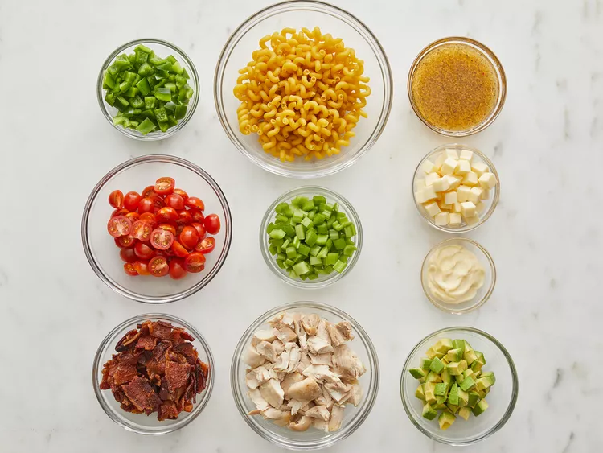
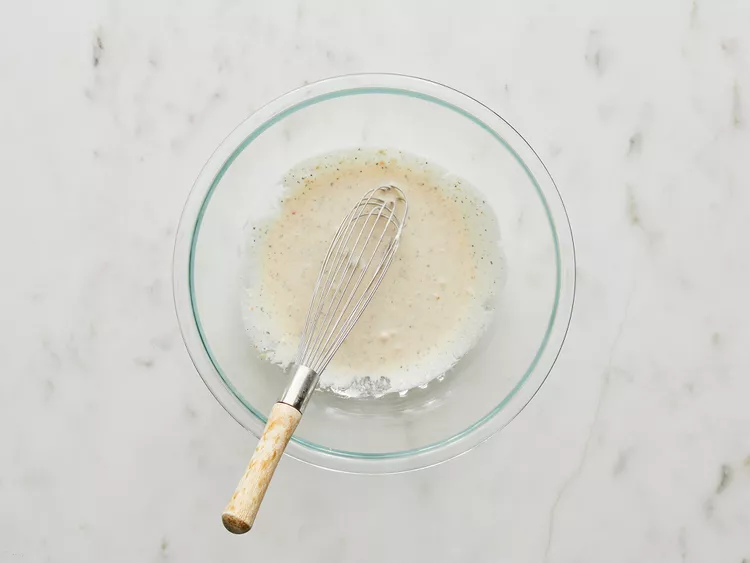
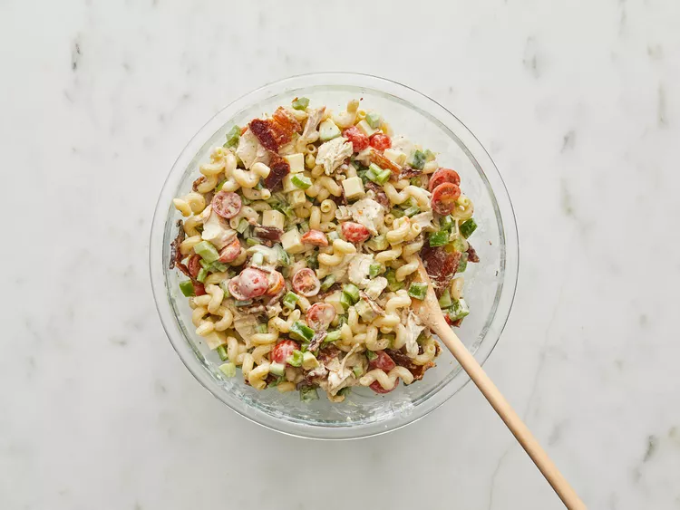

Gather all ingredients.
Bring a large pot of lightly salted water to a boil. Cook pasta in the boiling water, stirring occasionally, until tender yet firm to the bite, about 10 to12 minutes. Drain and rinse under cold water.
Step 3Whisk Italian-style dressing and mayonnaise together in a large bowl.
Stir in pasta, chicken, bacon, tomatoes, cheese, celery, green bell pepper, and avocado until evenly coated.
